Model Development Document · version 2.0.0
· trained 2026-09-15
· champion form: scorecard
Probability that a delinquent account makes NO material payment in the next cycle. Same target, split, gates and scaling as 1.1.0; the candidate set is widened with the behavioural channels the product already stores (visit outcomes, calls, promise shape, payment shape, customer flags) and the development panel is the event-sourced ledger.
ml/pipeline/config.py.| gate | observed | threshold | result |
|---|---|---|---|
| gini_min | 0.4669 | >= 0.25 | PASS |
| gini_in_target_band | 0.4669 | 0.35-0.55 | PASS |
| gini_not_suspicious | 0.4669 | < 0.6 | PASS |
| ks_min | 34.6000 | >= 20.0 | PASS |
| ks_not_suspicious | 34.6000 | < 60.0 | PASS |
| rank_order_breaks_total | 0.0000 | <= 1 | PASS |
| rank_order_breaks_top5 | 0.0000 | <= 0 | PASS |
| top_decile_lift_capture | 0.9305 | >= 0.55 (of max 1.428x) | PASS |
| top_decile_lift_not_suspicious | 0.9305 | < 0.995 | PASS |
| train_test_gini_gap | -0.0122 | < 0.1 | PASS |
| max_feature_psi | 0.0377 | < 0.25 | PASS |
| min_segment_gini | 0.2660 | >= 0.2 | PASS |
| Rows (train / validation / out-of-time) | 54,759 / 15,229 / 24,161 |
| Periods — train | 0 to 13 |
| Periods — out-of-time | 18 to 23 |
| Bad rate (train / oot) | 0.6928 / 0.7003 |
| Source rows | 94,149 |
| Distinct accounts | 18,021 |
| Training data hash | 5606d8a6c90f8198 |
| Dataset fingerprint | 6588454cc7f0e259 |
| Development panel | ledger |
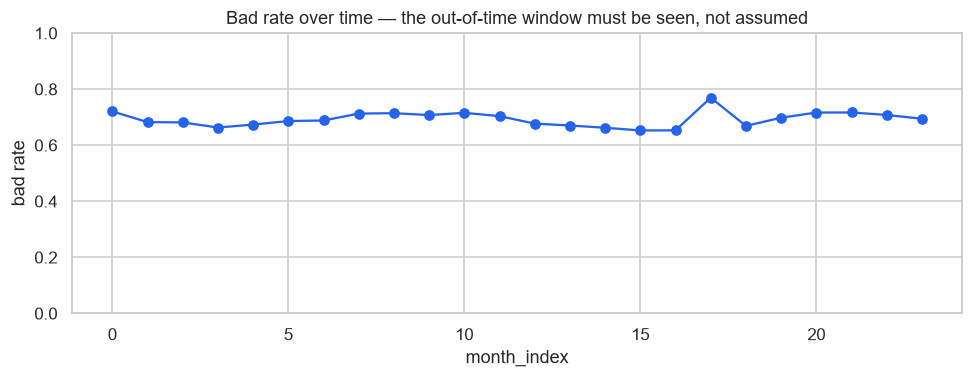
Bad rate by period. The out-of-time window sits at the right.
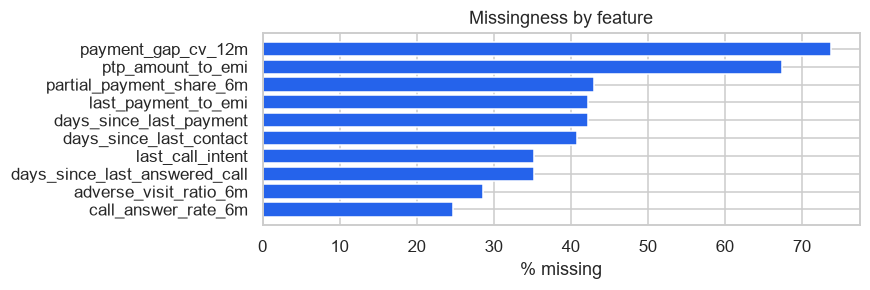
Missing by feature. Missing is never imputed — it becomes its own WOE bin.
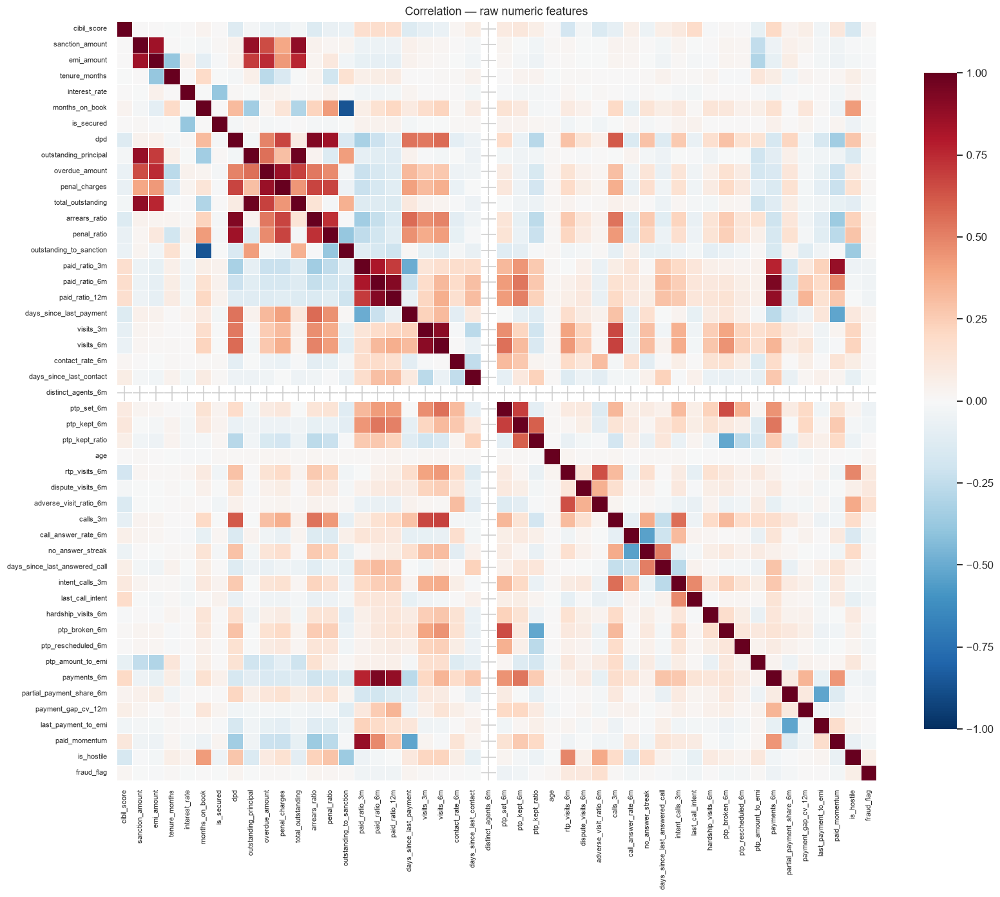
Raw numeric correlation.
| feature | type | n | missing_pct | unique | mean | std | p1 | p50 | p99 | mode | mode_share |
|---|---|---|---|---|---|---|---|---|---|---|---|
| cibil_score | numeric | 54,759 | 0.0000 | 601 | 583.4258 | 160.5558 | 307.0000 | 581.0000 | 876.0000 | ||
| sanction_amount | numeric | 54,759 | 0.0000 | 842 | 198,958.5274 | 176,143.6543 | 27,000.0000 | 148,000.0000 | 871,000.0000 | ||
| emi_amount | numeric | 54,759 | 0.0000 | 8,360 | 8,349.0402 | 8,792.7471 | 875.0000 | 5,657.0000 | 43,897.6000 | ||
| tenure_months | numeric | 54,759 | 0.0000 | 5 | 35.0391 | 13.7424 | 12.0000 | 36.0000 | 60.0000 | ||
| interest_rate | numeric | 54,759 | 0.0000 | 1,749 | 15.2524 | 4.1730 | 8.0000 | 15.1800 | 25.1900 | ||
| months_on_book | numeric | 54,759 | 0.0000 | 53 | 11.7884 | 10.3369 | 1.0000 | 7.0000 | 41.0000 | ||
| is_secured | numeric | 54,759 | 0.0000 | 2 | 0.3978 | 0.4894 | 0.0000 | 0.0000 | 1.0000 | ||
| dpd | numeric | 54,759 | 0.0000 | 361 | 70.8541 | 59.2731 | 0.0000 | 58.0000 | 249.0000 | ||
| outstanding_principal | numeric | 54,759 | 0.0000 | 8,163 | 147,264.4485 | 151,646.5195 | 4,833.3300 | 104,000.0000 | 742,000.0000 | ||
| overdue_amount | numeric | 54,759 | 0.0000 | 30,274 | 23,137.0012 | 33,410.4547 | 55.0000 | 12,524.0000 | 162,305.7000 | ||
| penal_charges | numeric | 54,759 | 0.0000 | 31,606 | 1,255.0066 | 3,207.0050 | 0.0000 | 202.6500 | 14,807.6952 | ||
| total_outstanding | numeric | 54,759 | 0.0000 | 54,504 | 171,656.4564 | 173,732.5430 | 8,810.0666 | 121,016.5900 | 855,586.7854 | ||
| arrears_ratio | numeric | 54,759 | 0.0000 | 6,559 | 2.7302 | 1.8664 | 0.0170 | 2.0000 | 8.5034 | ||
| penal_ratio | numeric | 54,759 | 0.0000 | 851 | 0.0075 | 0.0125 | 0.0000 | 0.0020 | 0.0584 | ||
| outstanding_to_sanction | numeric | 54,759 | 0.0000 | 112 | 0.7336 | 0.2781 | 0.0420 | 0.8610 | 1.0000 | ||
| paid_ratio_3m | numeric | 54,759 | 0.0000 | 1,450 | 0.2842 | 0.3760 | 0.0000 | 0.0320 | 1.4890 | ||
| paid_ratio_6m | numeric | 54,759 | 0.0000 | 1,323 | 0.2326 | 0.2961 | 0.0000 | 0.1450 | 1.1594 | ||
| paid_ratio_12m | numeric | 54,759 | 0.0000 | 976 | 0.1396 | 0.1928 | 0.0000 | 0.0830 | 0.8330 | ||
| days_since_last_payment | numeric | 54,759 | 42.2300 | 264 | 46.0716 | 40.9561 | 1.0000 | 35.0000 | 189.0000 | ||
| visits_3m | numeric | 54,759 | 0.0000 | 17 | 2.2755 | 2.3045 | 0.0000 | 2.0000 | 9.0000 | ||
| visits_6m | numeric | 54,759 | 0.0000 | 21 | 3.0669 | 3.2574 | 0.0000 | 2.0000 | 13.0000 | ||
| contact_rate_6m | numeric | 54,759 | 0.0000 | 104 | 0.4913 | 0.2882 | 0.0000 | 0.4500 | 1.0000 | ||
| days_since_last_contact | numeric | 54,759 | 40.7900 | 269 | 36.5538 | 36.8139 | 1.0000 | 25.0000 | 173.0000 | ||
| distinct_agents_6m | numeric | 54,759 | 0.0000 | 1 | 1.0000 | 0.0000 | 1.0000 | 1.0000 | 1.0000 | ||
| ptp_set_6m | numeric | 54,759 | 0.0000 | 10 | 0.4919 | 0.8568 | 0.0000 | 0.0000 | 4.0000 | ||
| ptp_kept_6m | numeric | 54,759 | 0.0000 | 6 | 0.2146 | 0.5299 | 0.0000 | 0.0000 | 2.0000 | ||
| ptp_kept_ratio | numeric | 54,759 | 0.0000 | 20 | 0.4801 | 0.2622 | 0.0000 | 0.5000 | 1.0000 | ||
| age | numeric | 54,759 | 0.0000 | 45 | 43.8144 | 12.6186 | 22.0000 | 44.0000 | 65.0000 | ||
| rtp_visits_6m | numeric | 54,759 | 0.0000 | 11 | 0.2396 | 0.6171 | 0.0000 | 0.0000 | 3.0000 | ||
| dispute_visits_6m | numeric | 54,759 | 0.0000 | 8 | 0.0612 | 0.2598 | 0.0000 | 0.0000 | 1.0000 | ||
| adverse_visit_ratio_6m | numeric | 54,759 | 28.6200 | 71 | 0.0959 | 0.1970 | 0.0000 | 0.0000 | 1.0000 | ||
| calls_3m | numeric | 54,759 | 0.0000 | 22 | 3.6837 | 3.5577 | 0.0000 | 3.0000 | 13.0000 | ||
| call_answer_rate_6m | numeric | 54,759 | 24.7500 | 189 | 0.4700 | 0.3053 | 0.0000 | 0.5000 | 1.0000 | ||
| no_answer_streak | numeric | 54,759 | 0.0000 | 22 | 0.9043 | 1.6046 | 0.0000 | 0.0000 | 7.0000 | ||
| days_since_last_answered_call | numeric | 54,759 | 35.2300 | 251 | 28.8414 | 31.4600 | 1.0000 | 18.0000 | 150.0000 | ||
| intent_calls_3m | numeric | 54,759 | 0.0000 | 11 | 0.6479 | 1.0224 | 0.0000 | 0.0000 | 4.0000 | ||
| last_call_intent | numeric | 54,759 | 35.2300 | 2 | 0.4053 | 0.4910 | 0.0000 | 0.0000 | 1.0000 | ||
| hardship_visits_6m | numeric | 54,759 | 0.0000 | 10 | 0.1093 | 0.4338 | 0.0000 | 0.0000 | 2.0000 | ||
| ptp_broken_6m | numeric | 54,759 | 0.0000 | 6 | 0.1731 | 0.4770 | 0.0000 | 0.0000 | 2.0000 | ||
| ptp_rescheduled_6m | numeric | 54,759 | 0.0000 | 4 | 0.0403 | 0.2064 | 0.0000 | 0.0000 | 1.0000 | ||
| ptp_amount_to_emi | numeric | 54,759 | 67.4000 | 1,330 | 0.9181 | 0.3700 | 0.0000 | 0.9840 | 1.5970 | ||
| payments_6m | numeric | 54,759 | 0.0000 | 14 | 1.5315 | 1.9473 | 0.0000 | 1.0000 | 8.0000 | ||
| partial_payment_share_6m | numeric | 54,759 | 42.9600 | 45 | 0.3464 | 0.3651 | 0.0000 | 0.3330 | 1.0000 | ||
| payment_gap_cv_12m | numeric | 54,759 | 73.8100 | 1,406 | 0.6845 | 0.3049 | 0.0360 | 0.6950 | 1.4450 | ||
| last_payment_to_emi | numeric | 54,759 | 42.2300 | 1,972 | 0.9187 | 0.4857 | 0.0370 | 1.0000 | 2.8357 | ||
| paid_momentum | numeric | 54,759 | 0.0000 | 1,713 | 0.1446 | 0.2793 | -0.4680 | 0.0000 | 1.0000 | ||
| is_hostile | numeric | 54,759 | 0.0000 | 2 | 0.2348 | 0.4239 | 0.0000 | 0.0000 | 1.0000 | ||
| fraud_flag | numeric | 54,759 | 0.0000 | 2 | 0.0216 | 0.1454 | 0.0000 | 0.0000 | 1.0000 | ||
| loan_type | categorical | 54,759 | 0.0000 | 6 | PERSONAL | 0.3471 | |||||
| dpd_bucket | categorical | 54,759 | 0.0000 | 5 | NPA | 0.3149 | |||||
| city | categorical | 54,759 | 0.0000 | 5 | Gurugram | 0.3006 | |||||
| employment_type | categorical | 54,759 | 0.0000 | 3 | SALARIED | 0.5093 | |||||
| branch_code | categorical | 54,759 | 0.0000 | 12 | BR08 | 0.0886 |
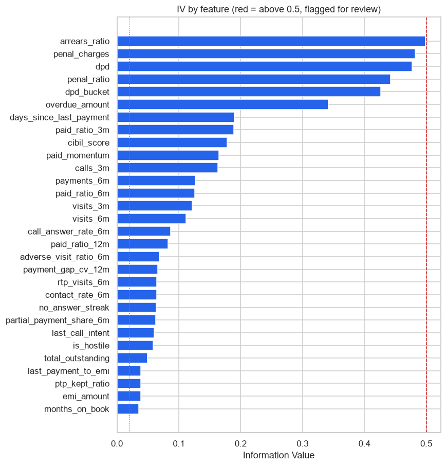
| feature | iv | strength | n_bins | monotonic | leakage_suspect |
|---|---|---|---|---|---|
| arrears_ratio | 0.4984 | strong | 6 | True | False |
| penal_charges | 0.4824 | strong | 6 | True | False |
| dpd | 0.4769 | strong | 6 | True | False |
| penal_ratio | 0.4421 | strong | 6 | True | False |
| dpd_bucket | 0.4265 | strong | 5 | True | False |
| overdue_amount | 0.3418 | strong | 6 | True | False |
| days_since_last_payment | 0.1897 | medium | 6 | True | False |
| paid_ratio_3m | 0.1893 | medium | 6 | True | False |
| cibil_score | 0.1781 | medium | 6 | True | False |
| paid_momentum | 0.1649 | medium | 6 | True | False |
| calls_3m | 0.1629 | medium | 6 | True | False |
| payments_6m | 0.1265 | medium | 6 | True | False |
| paid_ratio_6m | 0.1256 | medium | 6 | True | False |
| visits_3m | 0.1220 | medium | 6 | True | False |
| visits_6m | 0.1117 | medium | 6 | True | False |
| call_answer_rate_6m | 0.0871 | weak | 4 | True | False |
| paid_ratio_12m | 0.0825 | weak | 6 | True | False |
| adverse_visit_ratio_6m | 0.0686 | weak | 2 | True | False |
| payment_gap_cv_12m | 0.0663 | weak | 1 | True | False |
| rtp_visits_6m | 0.0646 | weak | 2 | True | False |
| contact_rate_6m | 0.0641 | weak | 3 | True | False |
| no_answer_streak | 0.0638 | weak | 4 | True | False |
| partial_payment_share_6m | 0.0631 | weak | 2 | True | False |
| last_call_intent | 0.0605 | weak | 2 | True | False |
| is_hostile | 0.0588 | weak | 2 | True | False |
| total_outstanding | 0.0490 | weak | 6 | True | False |
| last_payment_to_emi | 0.0390 | weak | 2 | True | False |
| ptp_kept_ratio | 0.0389 | weak | 3 | True | False |
| emi_amount | 0.0388 | weak | 6 | True | False |
| months_on_book | 0.0349 | weak | 6 | True | False |
| sanction_amount | 0.0302 | weak | 6 | True | False |
| ptp_kept_6m | 0.0276 | weak | 2 | True | False |
| days_since_last_answered_call | 0.0248 | weak | 1 | True | False |
| outstanding_principal | 0.0221 | weak | 6 | True | False |
| days_since_last_contact | 0.0221 | weak | 3 | True | False |
| ptp_broken_6m | 0.0202 | weak | 2 | True | False |
| employment_type | 0.0128 | unpredictive | 3 | True | False |
| loan_type | 0.0084 | unpredictive | 6 | True | False |
| hardship_visits_6m | 0.0079 | unpredictive | 2 | True | False |
| interest_rate | 0.0076 | unpredictive | 6 | True | False |
| is_secured | 0.0074 | unpredictive | 2 | True | False |
| ptp_amount_to_emi | 0.0069 | unpredictive | 2 | True | False |
| tenure_months | 0.0055 | unpredictive | 4 | True | False |
| dispute_visits_6m | 0.0046 | unpredictive | 2 | True | False |
| outstanding_to_sanction | 0.0035 | unpredictive | 4 | True | False |
| branch_code | 0.0023 | unpredictive | 6 | True | False |
| ptp_set_6m | 0.0019 | unpredictive | 2 | True | False |
| city | 0.0018 | unpredictive | 5 | True | False |
| age | 0.0005 | unpredictive | 4 | True | False |
| intent_calls_3m | 0.0003 | unpredictive | 2 | True | False |
| distinct_agents_6m | 0.0000 | unpredictive | 1 | True | False |
| ptp_rescheduled_6m | 0.0000 | unpredictive | 1 | True | False |
| fraud_flag | 0.0000 | unpredictive | 1 | True | False |
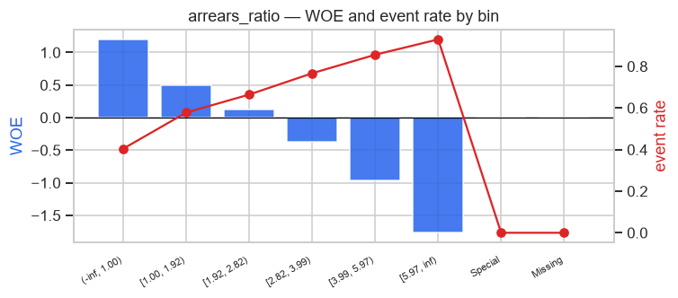
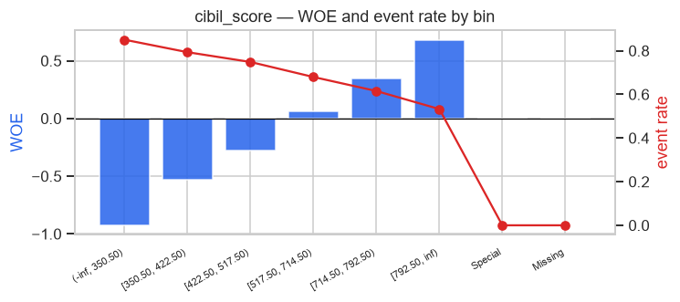
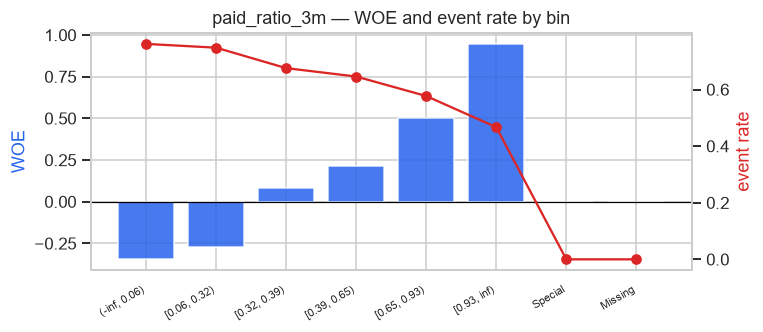
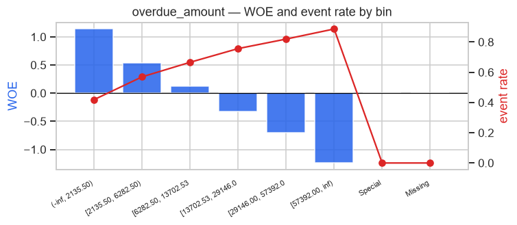
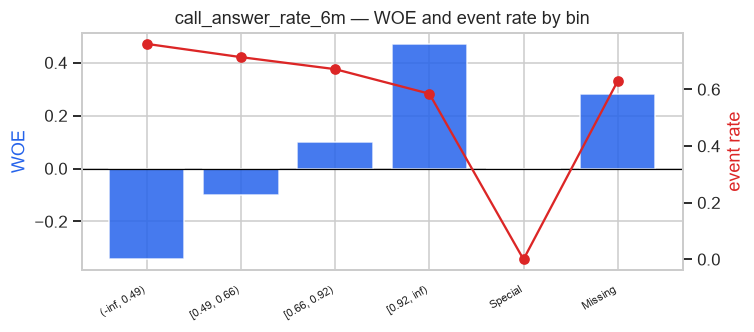
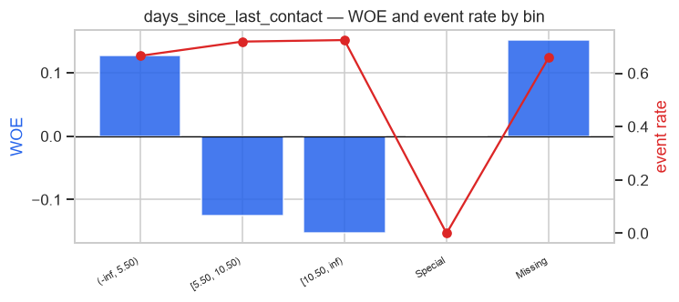
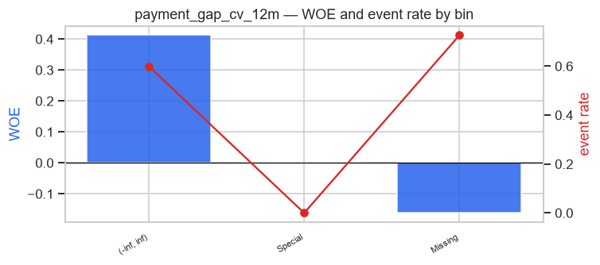
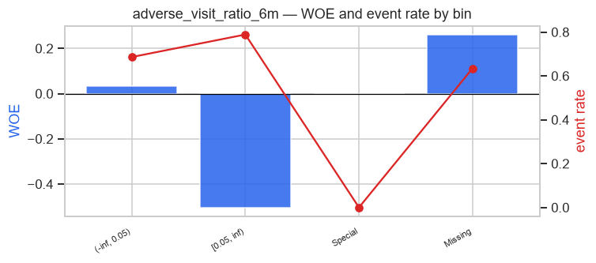
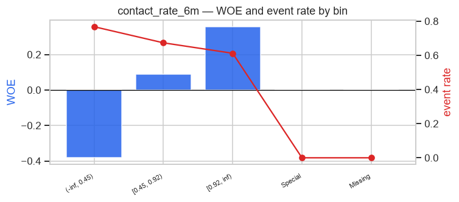
| feature | Bin | Count | Count (%) | Non-event | Event | Event rate | WoE | IV | JS |
|---|---|---|---|---|---|---|---|---|---|
| cibil_score | (-inf, 350.50) | 4,088 | 0.0747 | 611 | 3,477 | 0.8505 | -0.9256 | 0.0512 | 0.0062 |
| cibil_score | [350.50, 422.50) | 7,093 | 0.1295 | 1,466 | 5,627 | 0.7933 | -0.5318 | 0.0325 | 0.0040 |
| cibil_score | [422.50, 517.50) | 9,779 | 0.1786 | 2,460 | 7,319 | 0.7484 | -0.2771 | 0.0129 | 0.0016 |
| cibil_score | [517.50, 714.50) | 19,890 | 0.3632 | 6,372 | 13,518 | 0.6796 | 0.0611 | 0.0014 | 0.0002 |
| cibil_score | [714.50, 792.50) | 7,102 | 0.1297 | 2,732 | 4,370 | 0.6153 | 0.3435 | 0.0162 | 0.0020 |
| cibil_score | [792.50, inf) | 6,807 | 0.1243 | 3,181 | 3,626 | 0.5327 | 0.6823 | 0.0638 | 0.0078 |
| cibil_score | Special | 0 | 0.0000 | 0 | 0 | 0.0000 | 0.0000 | 0.0000 | 0.0000 |
| cibil_score | Missing | 0 | 0.0000 | 0 | 0 | 0.0000 | 0.0000 | 0.0000 | 0.0000 |
| cibil_score | 54,759 | 1.0000 | 16,822 | 37,937 | 0.6928 | 0.1781 | 0.0218 | ||
| sanction_amount | (-inf, 94500.00) | 14,626 | 0.2671 | 5,051 | 9,575 | 0.6547 | 0.1737 | 0.0083 | 0.0010 |
| sanction_amount | [94500.00, 158500.00) | 14,895 | 0.2720 | 4,820 | 10,075 | 0.6764 | 0.0760 | 0.0016 | 0.0002 |
| sanction_amount | [158500.00, 237500.00) | 10,801 | 0.1972 | 3,266 | 7,535 | 0.6976 | -0.0228 | 0.0001 | 0.0000 |
| sanction_amount | [237500.00, 298500.00) | 4,427 | 0.0808 | 1,249 | 3,178 | 0.7179 | -0.1207 | 0.0011 | 0.0001 |
| sanction_amount | [298500.00, 355500.00) | 2,985 | 0.0545 | 804 | 2,181 | 0.7307 | -0.1847 | 0.0018 | 0.0002 |
| sanction_amount | [355500.00, inf) | 7,025 | 0.1283 | 1,632 | 5,393 | 0.7677 | -0.3821 | 0.0172 | 0.0021 |
| sanction_amount | Special | 0 | 0.0000 | 0 | 0 | 0.0000 | 0.0000 | 0.0000 | 0.0000 |
| sanction_amount | Missing | 0 | 0.0000 | 0 | 0 | 0.0000 | 0.0000 | 0.0000 | 0.0000 |
| sanction_amount | 54,759 | 1.0000 | 16,822 | 37,937 | 0.6928 | 0.0302 | 0.0038 | ||
| emi_amount | (-inf, 3028.50) | 12,056 | 0.2202 | 4,256 | 7,800 | 0.6470 | 0.2074 | 0.0098 | 0.0012 |
| emi_amount | [3028.50, 5548.00) | 14,766 | 0.2697 | 4,867 | 9,899 | 0.6704 | 0.1033 | 0.0029 | 0.0004 |
| emi_amount | [5548.00, 8607.00) | 11,084 | 0.2024 | 3,393 | 7,691 | 0.6939 | -0.0051 | 0.0000 | 0.0000 |
| emi_amount | [8607.00, 11521.00) | 5,697 | 0.1040 | 1,631 | 4,066 | 0.7137 | -0.1002 | 0.0010 | 0.0001 |
| emi_amount | [11521.00, 16879.50) | 5,312 | 0.0970 | 1,402 | 3,910 | 0.7361 | -0.2124 | 0.0042 | 0.0005 |
| emi_amount | [16879.50, inf) | 5,844 | 0.1067 | 1,273 | 4,571 | 0.7822 | -0.4651 | 0.0208 | 0.0026 |
| emi_amount | Special | 0 | 0.0000 | 0 | 0 | 0.0000 | 0.0000 | 0.0000 | 0.0000 |
| emi_amount | Missing | 0 | 0.0000 | 0 | 0 | 0.0000 | 0.0000 | 0.0000 | 0.0000 |
| emi_amount | 54,759 | 1.0000 | 16,822 | 37,937 | 0.6928 | 0.0388 | 0.0048 | ||
| tenure_months | (-inf, 18.00) | 5,986 | 0.1093 | 1,601 | 4,385 | 0.7325 | -0.1943 | 0.0040 | 0.0005 |
| tenure_months | [18.00, 30.00) | 14,654 | 0.2676 | 4,438 | 10,216 | 0.6971 | -0.0205 | 0.0001 | 0.0000 |
| tenure_months | [30.00, 42.00) | 17,541 | 0.3203 | 5,462 | 12,079 | 0.6886 | 0.0196 | 0.0001 | 0.0000 |
| tenure_months | [42.00, inf) | 16,578 | 0.3027 | 5,321 | 11,257 | 0.6790 | 0.0639 | 0.0013 | 0.0002 |
| tenure_months | Special | 0 | 0.0000 | 0 | 0 | 0.0000 | 0.0000 | 0.0000 | 0.0000 |
| tenure_months | Missing | 0 | 0.0000 | 0 | 0 | 0.0000 | 0.0000 | 0.0000 | 0.0000 |
| tenure_months | 54,759 | 1.0000 | 16,822 | 37,937 | 0.6928 | 0.0055 | 0.0007 | ||
| interest_rate | (-inf, 9.03) | 4,465 | 0.0815 | 1,507 | 2,958 | 0.6625 | 0.1388 | 0.0016 | 0.0002 |
| interest_rate | [9.03, 12.60) | 10,982 | 0.2006 | 3,546 | 7,436 | 0.6771 | 0.0727 | 0.0011 | 0.0001 |
| interest_rate | [12.60, 16.68) | 19,255 | 0.3516 | 5,998 | 13,257 | 0.6885 | 0.0201 | 0.0001 | 0.0000 |
| interest_rate | [16.68, 18.68) | 8,410 | 0.1536 | 2,510 | 5,900 | 0.7015 | -0.0414 | 0.0003 | 0.0000 |
| interest_rate | [18.68, 21.24) | 7,091 | 0.1295 | 2,063 | 5,028 | 0.7091 | -0.0776 | 0.0008 | 0.0001 |
| interest_rate | [21.24, inf) | 4,556 | 0.0832 | 1,198 | 3,358 | 0.7371 | -0.2175 | 0.0038 | 0.0005 |
| interest_rate | Special | 0 | 0.0000 | 0 | 0 | 0.0000 | 0.0000 | 0.0000 | 0.0000 |
| interest_rate | Missing | 0 | 0.0000 | 0 | 0 | 0.0000 | 0.0000 | 0.0000 | 0.0000 |
| interest_rate | 54,759 | 1.0000 | 16,822 | 37,937 | 0.6928 | 0.0076 | 0.0010 | ||
| months_on_book | (-inf, 2.50) | 3,904 | 0.0713 | 1,565 | 2,339 | 0.5991 | 0.4114 | 0.0129 | 0.0016 |
| months_on_book | [2.50, 3.50) | 4,789 | 0.0875 | 1,786 | 3,003 | 0.6271 | 0.2936 | 0.0079 | 0.0010 |
| months_on_book | [3.50, 4.50) | 5,570 | 0.1017 | 1,934 | 3,636 | 0.6528 | 0.1819 | 0.0035 | 0.0004 |
| months_on_book | [4.50, 5.50) | 5,076 | 0.0927 | 1,600 | 3,476 | 0.6848 | 0.0374 | 0.0001 | 0.0000 |
| months_on_book | [5.50, 6.50) | 4,433 | 0.0810 | 1,267 | 3,166 | 0.7142 | -0.1026 | 0.0008 | 0.0001 |
| months_on_book | [6.50, inf) | 30,987 | 0.5659 | 8,670 | 22,317 | 0.7202 | -0.1322 | 0.0096 | 0.0012 |
| months_on_book | Special | 0 | 0.0000 | 0 | 0 | 0.0000 | 0.0000 | 0.0000 | 0.0000 |
| months_on_book | Missing | 0 | 0.0000 | 0 | 0 | 0.0000 | 0.0000 | 0.0000 | 0.0000 |
| months_on_book | 54,759 | 1.0000 | 16,822 | 37,937 | 0.6928 | 0.0349 | 0.0043 | ||
| is_secured | (-inf, 0.50) | 32,976 | 0.6022 | 9,638 | 23,338 | 0.7077 | -0.0711 | 0.0030 | 0.0004 |
| is_secured | [0.50, inf) | 21,783 | 0.3978 | 7,184 | 14,599 | 0.6702 | 0.1041 | 0.0044 | 0.0005 |
| is_secured | Special | 0 | 0.0000 | 0 | 0 | 0.0000 | 0.0000 | 0.0000 | 0.0000 |
| is_secured | Missing | 0 | 0.0000 | 0 | 0 | 0.0000 | 0.0000 | 0.0000 | 0.0000 |
| is_secured | 54,759 | 1.0000 | 16,822 | 37,937 | 0.6928 | 0.0074 | 0.0009 | ||
| dpd | (-inf, 24.50) | 14,600 | 0.2666 | 6,901 | 7,699 | 0.5273 | 0.7038 | 0.1459 | 0.0179 |
| dpd | [24.50, 52.50) | 11,073 | 0.2022 | 4,269 | 6,804 | 0.6145 | 0.3471 | 0.0258 | 0.0032 |
| dpd | [52.50, 83.50) | 9,970 | 0.1821 | 2,870 | 7,100 | 0.7121 | -0.0925 | 0.0015 | 0.0002 |
| dpd | [83.50, 129.50) | 9,799 | 0.1789 | 1,844 | 7,955 | 0.8118 | -0.6486 | 0.0649 | 0.0080 |
| dpd | [129.50, 172.50) | 5,837 | 0.1066 | 699 | 5,138 | 0.8802 | -1.1815 | 0.1109 | 0.0131 |
| dpd | [172.50, inf) | 3,480 | 0.0636 | 239 | 3,241 | 0.9313 | -1.7939 | 0.1278 | 0.0141 |
| dpd | Special | 0 | 0.0000 | 0 | 0 | 0.0000 | 0.0000 | 0.0000 | 0.0000 |
| dpd | Missing | 0 | 0.0000 | 0 | 0 | 0.0000 | 0.0000 | 0.0000 | 0.0000 |
| dpd | 54,759 | 1.0000 | 16,822 | 37,937 | 0.6928 | 0.4769 | 0.0565 | ||
| outstanding_principal | (-inf, 61516.66) | 16,216 | 0.2961 | 5,406 | 10,810 | 0.6666 | 0.1203 | 0.0044 | 0.0005 |
| outstanding_principal | [61516.66, 112958.34) | 13,182 | 0.2407 | 4,285 | 8,897 | 0.6749 | 0.0826 | 0.0017 | 0.0002 |
| outstanding_principal | [112958.34, 152111.12) | 7,198 | 0.1314 | 2,280 | 4,918 | 0.6832 | 0.0445 | 0.0003 | 0.0000 |
| outstanding_principal | [152111.12, 209975.00) | 6,691 | 0.1222 | 1,925 | 4,766 | 0.7123 | -0.0933 | 0.0010 | 0.0001 |
showing 70 of 372 rows; the full table is in the CSV beside this document.
| step | kept | dropped | dropped_features | reason |
|---|---|---|---|---|
| iv_filter | 36 | 17 | ['tenure_months', 'interest_rate', 'is_secured', 'outstanding_to_sanction', 'distinct_agents_6m', 'ptp_set_6m', 'age', 'dispute_visits_6m', 'intent_calls_3m', 'hardship_visits_6m', 'ptp_rescheduled_6m', 'ptp_amount_to_emi', 'fraud_flag', 'loan_type', 'city', 'employment_type', 'branch_code'] | IV outside [0.02, 0.8]; 0 flagged for review above 0.5 |
| correlation | 22 | 14 | ['penal_charges', 'dpd', 'penal_ratio', 'dpd_bucket', 'paid_momentum', 'payments_6m', 'paid_ratio_6m', 'paid_ratio_12m', 'visits_6m', 'rtp_visits_6m', 'emi_amount', 'sanction_amount', 'outstanding_principal', 'ptp_kept_6m'] | |r| > 0.7; the lower-IV member of each pair goes |
| vif | 22 | 0 | [] | VIF > 5.0, dropped one at a time worst-first |
| sfs | 9 | 13 | ['months_on_book', 'total_outstanding', 'days_since_last_payment', 'visits_3m', 'ptp_kept_ratio', 'calls_3m', 'no_answer_streak', 'days_since_last_answered_call', 'last_call_intent', 'ptp_broken_6m', 'partial_payment_share_6m', 'last_payment_to_emi', 'is_hostile'] | forward stepwise, stop when validation Gini gain < 0.0008 |
| sign_check | 9 | 0 | [] | every WOE coefficient must be negative (high WOE = low risk) |
| dropped | kept | abs_corr | iv_dropped | iv_kept |
|---|---|---|---|---|
| penal_charges | arrears_ratio | 0.8328 | 0.4824 | 0.4984 |
| dpd | arrears_ratio | 0.8791 | 0.4769 | 0.4984 |
| penal_ratio | arrears_ratio | 0.8176 | 0.4421 | 0.4984 |
| dpd_bucket | arrears_ratio | 0.8351 | 0.4265 | 0.4984 |
| paid_momentum | paid_ratio_3m | 0.8408 | 0.1649 | 0.1893 |
| payments_6m | paid_ratio_3m | 0.7200 | 0.1265 | 0.1893 |
| paid_ratio_6m | paid_ratio_3m | 0.7897 | 0.1256 | 0.1893 |
| paid_ratio_12m | paid_ratio_3m | 0.7508 | 0.0825 | 0.1893 |
| visits_6m | visits_3m | 0.8857 | 0.1117 | 0.1220 |
| rtp_visits_6m | adverse_visit_ratio_6m | 0.8835 | 0.0646 | 0.0686 |
| emi_amount | total_outstanding | 0.7147 | 0.0388 | 0.0490 |
| sanction_amount | total_outstanding | 0.8256 | 0.0302 | 0.0490 |
| outstanding_principal | total_outstanding | 0.9327 | 0.0221 | 0.0490 |
| ptp_kept_6m | ptp_kept_ratio | 0.7564 | 0.0276 | 0.0389 |
| feature | vif | action |
|---|---|---|
| cibil_score | 1.1010 | kept |
| months_on_book | 2.0160 | kept |
| overdue_amount | 3.3400 | kept |
| total_outstanding | 2.2780 | kept |
| arrears_ratio | 2.8060 | kept |
| paid_ratio_3m | 4.0160 | kept |
| days_since_last_payment | 1.6290 | kept |
| visits_3m | 2.3510 | kept |
| contact_rate_6m | 1.3040 | kept |
| days_since_last_contact | 1.3150 | kept |
| ptp_kept_ratio | 1.5400 | kept |
| adverse_visit_ratio_6m | 1.5410 | kept |
| calls_3m | 2.7680 | kept |
| call_answer_rate_6m | 1.7140 | kept |
| no_answer_streak | 1.4690 | kept |
| days_since_last_answered_call | 2.2450 | kept |
| last_call_intent | 1.1510 | kept |
| ptp_broken_6m | 1.6190 | kept |
| partial_payment_share_6m | 2.0940 | kept |
| payment_gap_cv_12m | 1.9340 | kept |
| last_payment_to_emi | 2.5370 | kept |
| is_hostile | 1.4540 | kept |
| step | candidate | gini | gain | action |
|---|---|---|---|---|
| 1 | arrears_ratio | 0.3835 | 0.3835 | added |
| 2 | cibil_score | 0.4298 | 0.0463 | added |
| 3 | paid_ratio_3m | 0.4402 | 0.0104 | added |
| 4 | overdue_amount | 0.4449 | 0.0046 | added |
| 5 | call_answer_rate_6m | 0.4480 | 0.0031 | added |
| 6 | days_since_last_contact | 0.4505 | 0.0025 | added |
| 7 | payment_gap_cv_12m | 0.4529 | 0.0023 | added |
| 8 | adverse_visit_ratio_6m | 0.4548 | 0.0019 | added |
| 9 | contact_rate_6m | 0.4570 | 0.0022 | added |
| 10 | last_call_intent | 0.4578 | 0.0008 | stopped |
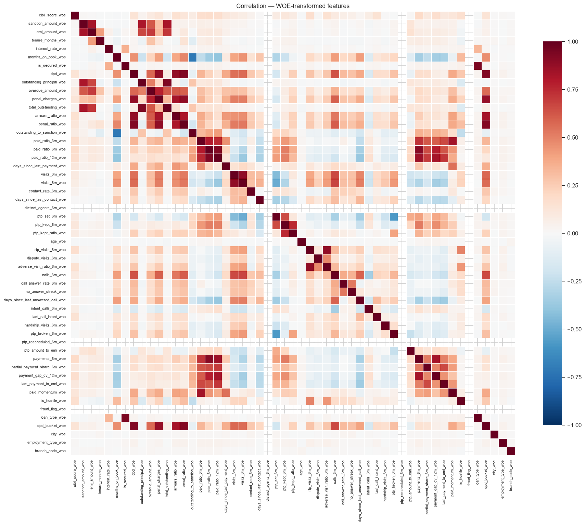
WOE-space correlation after transformation.
Scaled at PDO 20, base score 600 at 50.0:1 odds (factor 28.853901, offset 487.122876). Points read higher = safer, the way a bureau score does, while the model’s probability reads higher = riskier. They are monotonic inverses; every evaluation below uses the probability.
| band | count | bad_rate | min_points | max_points |
|---|---|---|---|---|
| A | 8,534 | 0.4131 | 487 | 542 |
| B | 10,765 | 0.5734 | 472 | 486 |
| C | 13,586 | 0.6914 | 454 | 471 |
| D | 14,020 | 0.8272 | 429 | 453 |
| E | 7,854 | 0.9228 | 379 | 428 |
| feature | bin | count | event_rate | woe | coefficient | points |
|---|---|---|---|---|---|---|
| arrears_ratio | (-inf, 1.00) | 3,736 | 0.4044 | 1.2002 | -0.5299 | 70 |
| arrears_ratio | [1.00, 1.92) | 16,095 | 0.5780 | 0.4986 | -0.5299 | 59 |
| arrears_ratio | [1.92, 2.82) | 11,827 | 0.6645 | 0.1298 | -0.5299 | 54 |
| arrears_ratio | [2.82, 3.99) | 9,199 | 0.7669 | -0.3778 | -0.5299 | 46 |
| arrears_ratio | [3.99, 5.97) | 9,685 | 0.8559 | -0.9681 | -0.5299 | 37 |
| arrears_ratio | [5.97, inf) | 4,217 | 0.9296 | -1.7669 | -0.5299 | 25 |
| arrears_ratio | Special | 0 | 0.0000 | 0.0000 | -0.5299 | 52 |
| arrears_ratio | Missing | 0 | 0.0000 | 0.0000 | -0.5299 | 52 |
| cibil_score | (-inf, 350.50) | 4,088 | 0.8505 | -0.9256 | -0.7660 | 31 |
| cibil_score | [350.50, 422.50) | 7,093 | 0.7933 | -0.5318 | -0.7660 | 40 |
| cibil_score | [422.50, 517.50) | 9,779 | 0.7484 | -0.2771 | -0.7660 | 46 |
| cibil_score | [517.50, 714.50) | 19,890 | 0.6796 | 0.0611 | -0.7660 | 53 |
| cibil_score | [714.50, 792.50) | 7,102 | 0.6153 | 0.3435 | -0.7660 | 59 |
| cibil_score | [792.50, inf) | 6,807 | 0.5327 | 0.6823 | -0.7660 | 67 |
| cibil_score | Special | 0 | 0.0000 | 0.0000 | -0.7660 | 52 |
| cibil_score | Missing | 0 | 0.0000 | 0.0000 | -0.7660 | 52 |
| paid_ratio_3m | (-inf, 0.06) | 27,619 | 0.7611 | -0.3457 | -0.3916 | 48 |
| paid_ratio_3m | [0.06, 0.32) | 4,825 | 0.7478 | -0.2735 | -0.3916 | 49 |
| paid_ratio_3m | [0.32, 0.39) | 7,208 | 0.6755 | 0.0801 | -0.3916 | 53 |
| paid_ratio_3m | [0.39, 0.65) | 4,043 | 0.6458 | 0.2126 | -0.3916 | 54 |
| paid_ratio_3m | [0.65, 0.93) | 6,016 | 0.5770 | 0.5029 | -0.3916 | 57 |
| paid_ratio_3m | [0.93, inf) | 5,048 | 0.4667 | 0.9466 | -0.3916 | 63 |
| paid_ratio_3m | Special | 0 | 0.0000 | 0.0000 | -0.3916 | 52 |
| paid_ratio_3m | Missing | 0 | 0.0000 | 0.0000 | -0.3916 | 52 |
| overdue_amount | (-inf, 2135.50) | 3,428 | 0.4189 | 1.1405 | -0.4188 | 66 |
| overdue_amount | [2135.50, 6282.50) | 11,641 | 0.5698 | 0.5322 | -0.4188 | 58 |
| overdue_amount | [6282.50, 13702.53) | 14,025 | 0.6660 | 0.1233 | -0.4188 | 53 |
| overdue_amount | [13702.53, 29146.00) | 13,076 | 0.7566 | -0.3208 | -0.4188 | 48 |
| overdue_amount | [29146.00, 57392.00) | 7,831 | 0.8196 | -0.7002 | -0.4188 | 43 |
| overdue_amount | [57392.00, inf) | 4,758 | 0.8863 | -1.2402 | -0.4188 | 37 |
| overdue_amount | Special | 0 | 0.0000 | 0.0000 | -0.4188 | 52 |
| overdue_amount | Missing | 0 | 0.0000 | 0.0000 | -0.4188 | 52 |
| call_answer_rate_6m | (-inf, 0.49) | 20,175 | 0.7606 | -0.3430 | -0.3427 | 48 |
| call_answer_rate_6m | [0.49, 0.66) | 9,377 | 0.7139 | -0.1010 | -0.3427 | 51 |
| call_answer_rate_6m | [0.66, 0.92) | 6,346 | 0.6714 | 0.0985 | -0.3427 | 53 |
| call_answer_rate_6m | [0.92, inf) | 5,310 | 0.5847 | 0.4710 | -0.3427 | 56 |
| call_answer_rate_6m | Special | 0 | 0.0000 | 0.0000 | -0.3427 | 52 |
| call_answer_rate_6m | Missing | 13,551 | 0.6295 | 0.2830 | -0.3427 | 55 |
| days_since_last_contact | (-inf, 5.50) | 4,451 | 0.6652 | 0.1265 | -1.5285 | 57 |
| days_since_last_contact | [5.50, 10.50) | 3,665 | 0.7187 | -0.1247 | -1.5285 | 46 |
| days_since_last_contact | [10.50, inf) | 24,307 | 0.7244 | -0.1532 | -1.5285 | 45 |
| days_since_last_contact | Special | 0 | 0.0000 | 0.0000 | -1.5285 | 52 |
| days_since_last_contact | Missing | 22,336 | 0.6597 | 0.1515 | -1.5285 | 58 |
| payment_gap_cv_12m | (-inf, inf) | 14,344 | 0.5989 | 0.4122 | -0.4843 | 58 |
| payment_gap_cv_12m | Special | 0 | 0.0000 | 0.0000 | -0.4843 | 52 |
| payment_gap_cv_12m | Missing | 40,415 | 0.7261 | -0.1618 | -0.4843 | 50 |
| adverse_visit_ratio_6m | (-inf, 0.05) | 27,605 | 0.6860 | 0.0318 | -0.3835 | 52 |
| adverse_visit_ratio_6m | [0.05, inf) | 11,481 | 0.7887 | -0.5038 | -0.3835 | 46 |
| adverse_visit_ratio_6m | Special | 0 | 0.0000 | 0.0000 | -0.3835 | 52 |
| adverse_visit_ratio_6m | Missing | 15,673 | 0.6345 | 0.2615 | -0.3835 | 55 |
| contact_rate_6m | (-inf, 0.45) | 16,351 | 0.7677 | -0.3822 | -0.4698 | 47 |
| contact_rate_6m | [0.45, 0.92) | 30,575 | 0.6734 | 0.0897 | -0.4698 | 53 |
| contact_rate_6m | [0.92, inf) | 7,833 | 0.6122 | 0.3569 | -0.4698 | 57 |
| contact_rate_6m | Special | 0 | 0.0000 | 0.0000 | -0.4698 | 52 |
| contact_rate_6m | Missing | 0 | 0.0000 | 0.0000 | -0.4698 | 52 |
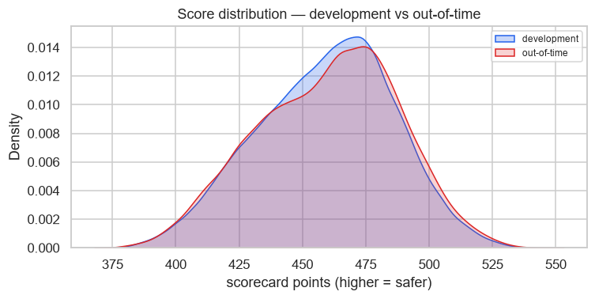
| Sample | n | Bad rate | Gini | KS | Top-decile lift | Breaks |
|---|---|---|---|---|---|---|
| Train | 54,759 | 0.6928 | 0.4547 | 33.50 | 1.35 | 0 |
| Validation | 15,229 | 0.6844 | 0.4580 | 34.90 | 1.37 | 0 |
| Out-of-time | 24,161 | 0.7003 | 0.4669 | 34.60 | 1.33 | 0 |
| Challenger (GBM, oot) | 24,161 | 0.7003 | 0.4689 | 35.09 | 1.33 | 0 |
| decile | count | events | non_events | bad_rate | lift | min_score | max_score | mean_score | cum_events | cum_count | cum_bad_rate | cum_pct_events | cum_pct_non_events | ks | woe |
|---|---|---|---|---|---|---|---|---|---|---|---|---|---|---|---|
| 1.0000 | 2,417.0000 | 2,249.0000 | 168.0000 | 0.9305 | 1.3286 | 0.9046 | 0.9808 | 0.9335 | 2,249.0000 | 2,417.0000 | 0.9305 | 0.1329 | 0.0232 | 10.9707 | -1.7453 |
| 2.0000 | 2,416.0000 | 2,174.0000 | 242.0000 | 0.8998 | 1.2848 | 0.8558 | 0.9046 | 0.8802 | 4,423.0000 | 4,833.0000 | 0.9152 | 0.2614 | 0.0566 | 20.4761 | -1.3465 |
| 3.0000 | 2,416.0000 | 2,075.0000 | 341.0000 | 0.8589 | 1.2263 | 0.8067 | 0.8558 | 0.8317 | 6,498.0000 | 7,249.0000 | 0.8964 | 0.3840 | 0.1037 | 28.0291 | -0.9569 |
| 4.0000 | 2,416.0000 | 1,927.0000 | 489.0000 | 0.7976 | 1.1389 | 0.7532 | 0.8066 | 0.7805 | 8,425.0000 | 9,665.0000 | 0.8717 | 0.4979 | 0.1713 | 32.6631 | -0.5224 |
| 5.0000 | 2,416.0000 | 1,786.0000 | 630.0000 | 0.7392 | 1.0555 | 0.7016 | 0.7531 | 0.7267 | 10,211.0000 | 12,081.0000 | 0.8452 | 0.6035 | 0.2583 | 34.5164 | -0.1931 |
| 6.0000 | 2,416.0000 | 1,665.0000 | 751.0000 | 0.6892 | 0.9840 | 0.6503 | 0.7015 | 0.6761 | 11,876.0000 | 14,497.0000 | 0.8192 | 0.7018 | 0.3620 | 33.9833 | 0.0528 |
| 7.0000 | 2,416.0000 | 1,551.0000 | 865.0000 | 0.6420 | 0.9167 | 0.5952 | 0.6503 | 0.6234 | 13,427.0000 | 16,913.0000 | 0.7939 | 0.7935 | 0.4815 | 31.2019 | 0.2650 |
| 8.0000 | 2,416.0000 | 1,360.0000 | 1,056.0000 | 0.5629 | 0.8038 | 0.5361 | 0.5951 | 0.5670 | 14,787.0000 | 19,329.0000 | 0.7650 | 0.8739 | 0.6273 | 24.6536 | 0.5959 |
| 9.0000 | 2,416.0000 | 1,190.0000 | 1,226.0000 | 0.4925 | 0.7033 | 0.4478 | 0.5360 | 0.4952 | 15,977.0000 | 21,745.0000 | 0.7347 | 0.9442 | 0.7967 | 14.7526 | 0.8787 |
| 10.0000 | 2,416.0000 | 944.0000 | 1,472.0000 | 0.3907 | 0.5579 | 0.1340 | 0.4478 | 0.3630 | 16,921.0000 | 24,161.0000 | 0.7003 | 1.0000 | 1.0000 | 0.0000 | 1.2932 |
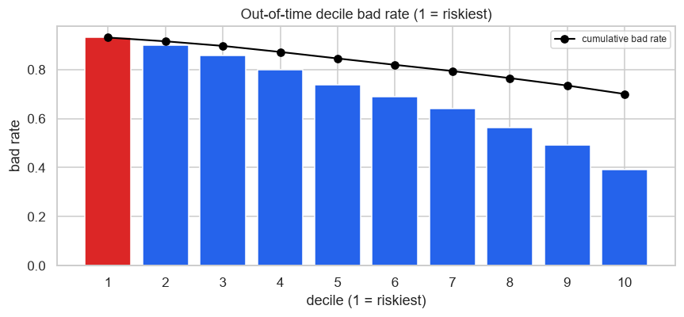
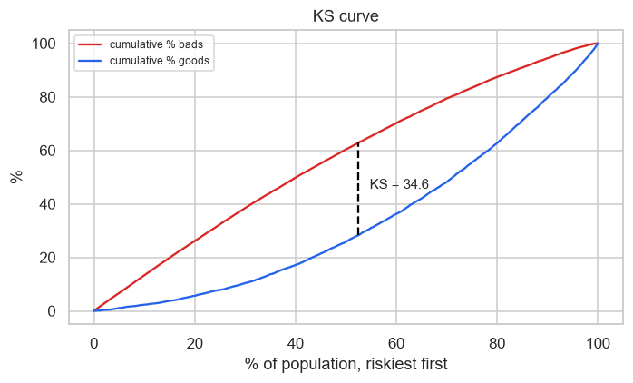
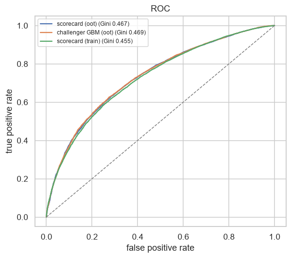
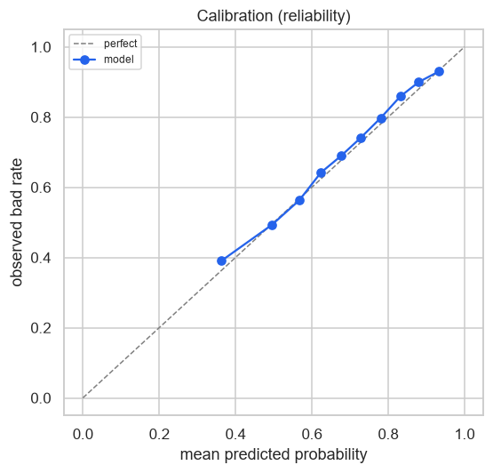
| band | count | observed | predicted | gap |
|---|---|---|---|---|
| 1.0000 | 2,417.0000 | 0.3906 | 0.3630 | -0.0275 |
| 2.0000 | 2,416.0000 | 0.4930 | 0.4952 | 0.0022 |
| 3.0000 | 2,416.0000 | 0.5629 | 0.5670 | 0.0041 |
| 4.0000 | 2,416.0000 | 0.6416 | 0.6234 | -0.0182 |
| 5.0000 | 2,416.0000 | 0.6892 | 0.6762 | -0.0130 |
| 6.0000 | 2,416.0000 | 0.7397 | 0.7267 | -0.0129 |
| 7.0000 | 2,416.0000 | 0.7976 | 0.7805 | -0.0171 |
| 8.0000 | 2,416.0000 | 0.8589 | 0.8318 | -0.0271 |
| 9.0000 | 2,416.0000 | 0.8998 | 0.8802 | -0.0196 |
| 10.0000 | 2,416.0000 | 0.9305 | 0.9335 | 0.0030 |
| decile | count | events | non_events | bad_rate | lift | min_score | max_score | mean_score | cum_events | cum_count | cum_bad_rate | cum_pct_events | cum_pct_non_events | ks | woe |
|---|---|---|---|---|---|---|---|---|---|---|---|---|---|---|---|
| 1.0000 | 5,476.0000 | 5,110.0000 | 366.0000 | 0.9332 | 1.3469 | 0.9026 | 0.9808 | 0.9318 | 5,110.0000 | 5,476.0000 | 0.9332 | 0.1347 | 0.0218 | 11.2940 | -1.8231 |
| 2.0000 | 5,476.0000 | 4,850.0000 | 626.0000 | 0.8857 | 1.2784 | 0.8529 | 0.9026 | 0.8773 | 9,960.0000 | 10,952.0000 | 0.9094 | 0.2625 | 0.0590 | 20.3570 | -1.2341 |
| 3.0000 | 5,476.0000 | 4,567.0000 | 909.0000 | 0.8340 | 1.2038 | 0.8051 | 0.8529 | 0.8288 | 14,527.0000 | 16,428.0000 | 0.8843 | 0.3829 | 0.1130 | 26.9918 | -0.8010 |
| 4.0000 | 5,476.0000 | 4,332.0000 | 1,144.0000 | 0.7911 | 1.1419 | 0.7574 | 0.8050 | 0.7812 | 18,859.0000 | 21,904.0000 | 0.8610 | 0.4971 | 0.1810 | 31.6101 | -0.5183 |
| 5.0000 | 5,476.0000 | 3,995.0000 | 1,481.0000 | 0.7295 | 1.0530 | 0.7094 | 0.7574 | 0.7337 | 22,854.0000 | 27,380.0000 | 0.8347 | 0.6024 | 0.2691 | 33.3367 | -0.1791 |
| 6.0000 | 5,476.0000 | 3,703.0000 | 1,773.0000 | 0.6762 | 0.9761 | 0.6605 | 0.7094 | 0.6862 | 26,557.0000 | 32,856.0000 | 0.8083 | 0.7000 | 0.3745 | 32.5579 | 0.0768 |
| 7.0000 | 5,476.0000 | 3,443.0000 | 2,033.0000 | 0.6287 | 0.9075 | 0.6083 | 0.6605 | 0.6369 | 30,000.0000 | 38,332.0000 | 0.7826 | 0.7908 | 0.4953 | 29.5481 | 0.2864 |
| 8.0000 | 5,476.0000 | 3,133.0000 | 2,343.0000 | 0.5721 | 0.8258 | 0.5500 | 0.6083 | 0.5828 | 33,133.0000 | 43,808.0000 | 0.7563 | 0.8734 | 0.6346 | 23.8783 | 0.5227 |
| 9.0000 | 5,476.0000 | 2,770.0000 | 2,706.0000 | 0.5058 | 0.7301 | 0.4646 | 0.5500 | 0.5114 | 35,903.0000 | 49,284.0000 | 0.7285 | 0.9464 | 0.7954 | 15.0938 | 0.7899 |
| 10.0000 | 5,475.0000 | 2,034.0000 | 3,441.0000 | 0.3715 | 0.5362 | 0.1298 | 0.4645 | 0.3777 | 37,937.0000 | 54,759.0000 | 0.6928 | 1.0000 | 1.0000 | 0.0000 | 1.3390 |
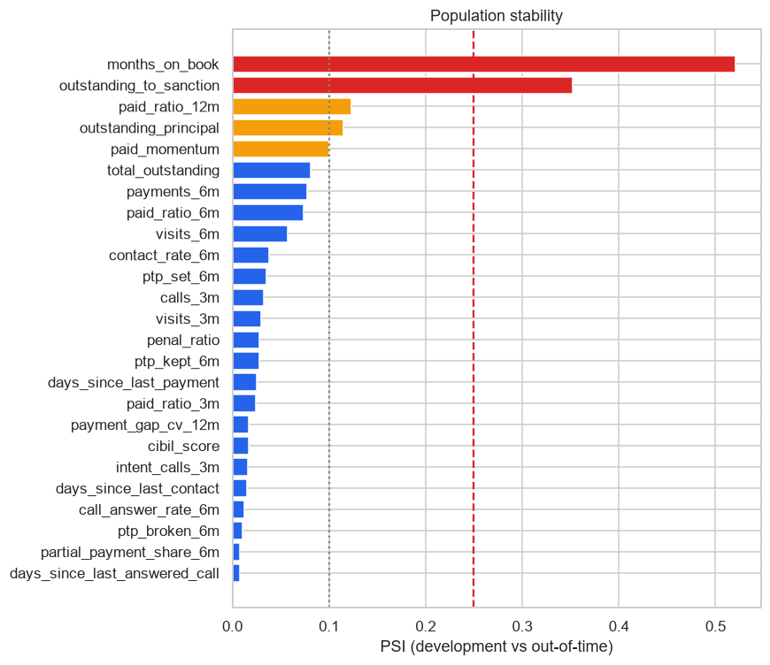
| feature | psi | verdict | in_model |
|---|---|---|---|
| months_on_book | 0.5208 | shifted | False |
| outstanding_to_sanction | 0.3521 | shifted | False |
| paid_ratio_12m | 0.1230 | watch | False |
| outstanding_principal | 0.1151 | watch | False |
| paid_momentum | 0.1001 | watch | False |
| total_outstanding | 0.0806 | stable | False |
| payments_6m | 0.0770 | stable | False |
| paid_ratio_6m | 0.0737 | stable | False |
| visits_6m | 0.0568 | stable | False |
| contact_rate_6m | 0.0377 | stable | True |
| ptp_set_6m | 0.0353 | stable | False |
| calls_3m | 0.0322 | stable | False |
| visits_3m | 0.0297 | stable | False |
| penal_ratio | 0.0279 | stable | False |
| ptp_kept_6m | 0.0277 | stable | False |
| days_since_last_payment | 0.0253 | stable | False |
| paid_ratio_3m | 0.0247 | stable | True |
| payment_gap_cv_12m | 0.0171 | stable | True |
| cibil_score | 0.0165 | stable | True |
| intent_calls_3m | 0.0159 | stable | False |
| days_since_last_contact | 0.0148 | stable | True |
| call_answer_rate_6m | 0.0121 | stable | True |
| ptp_broken_6m | 0.0103 | stable | False |
| partial_payment_share_6m | 0.0076 | stable | False |
| days_since_last_answered_call | 0.0075 | stable | False |
| ptp_kept_ratio | 0.0052 | stable | False |
| no_answer_streak | 0.0048 | stable | False |
| emi_amount | 0.0041 | stable | False |
| dpd | 0.0040 | stable | False |
| overdue_amount | 0.0036 | stable | True |
showing 30 of 53 rows; the full table is in the CSV beside this document.
Score PSI, development against out-of-time: 0.0059.
| dimension | segment | n | bad_rate | gini | gated |
|---|---|---|---|---|---|
| dpd_bucket | NPA | 7,519 | 0.8778 | 0.3102 | True |
| dpd_bucket | BUCKET_1 | 6,415 | 0.5384 | 0.3059 | True |
| dpd_bucket | BUCKET_2 | 5,113 | 0.6395 | 0.2703 | True |
| dpd_bucket | BUCKET_3 | 3,951 | 0.7558 | 0.2660 | True |
| dpd_bucket | CURRENT | 1,163 | 0.5254 | 0.2695 | True |
| loan_type | PERSONAL | 8,151 | 0.7157 | 0.4761 | True |
| loan_type | AUTO | 4,353 | 0.6779 | 0.4486 | True |
| loan_type | BUSINESS | 3,781 | 0.7268 | 0.4752 | True |
| loan_type | HOME | 2,737 | 0.6770 | 0.4922 | True |
| loan_type | GOLD | 2,688 | 0.6622 | 0.4711 | True |
| loan_type | EDUCATION | 2,451 | 0.7160 | 0.4092 | True |
| city | Gurugram | 7,142 | 0.6897 | 0.4843 | True |
| city | Delhi | 5,775 | 0.6996 | 0.4620 | True |
| city | Noida | 4,303 | 0.7102 | 0.4477 | True |
| city | Faridabad | 3,528 | 0.7140 | 0.4616 | True |
| city | Ghaziabad | 3,413 | 0.6973 | 0.4656 | True |
| Bootstrap Gini (out-of-time) | 0.4669 95% CI [0.4527, 0.4793] over 300 resamples |
| Adversarial validation AUC | 0.7284 — different populations |
AUC near 0.5 means development and out-of-time look like the same book. Above 0.70 the out-of-time result is measuring transfer across a shift as much as it is measuring skill.
| feature | gini_real | gini_time_shuffled | retention | note |
|---|---|---|---|---|
| arrears_ratio | 0.3757 | 0.0064 | 0.0170 | |
| overdue_amount | 0.3260 | 0.0068 | 0.0210 | |
| cibil_score | 0.2351 | 0.0063 | 0.0270 | |
| paid_ratio_3m | 0.2209 | 0.0055 | 0.0250 | |
| call_answer_rate_6m | 0.1111 | 0.0064 | 0.0580 | |
| contact_rate_6m | 0.0914 | 0.0045 | 0.0500 | |
| adverse_visit_ratio_6m | 0.0907 | 0.0027 | 0.0300 | |
| payment_gap_cv_12m | 0.0197 | 0.0017 | 0.0850 | |
| days_since_last_contact | 0.0052 | 0.0015 | 0.3000 |
| removed | gini | delta |
|---|---|---|
| cibil_score | 0.4440 | -0.0240 |
| arrears_ratio | 0.4454 | -0.0226 |
| overdue_amount | 0.4606 | -0.0074 |
| paid_ratio_3m | 0.4643 | -0.0038 |
| payment_gap_cv_12m | 0.4652 | -0.0028 |
| contact_rate_6m | 0.4654 | -0.0026 |
| call_answer_rate_6m | 0.4658 | -0.0023 |
| days_since_last_contact | 0.4674 | -0.0006 |
| adverse_visit_ratio_6m | 0.4675 | -0.0006 |
| (none — full model) | 0.4680 | 0.0000 |
scripts/build_modelling_dataset.py
--sweep — and it was set to land in a realistic band, not discovered
there.